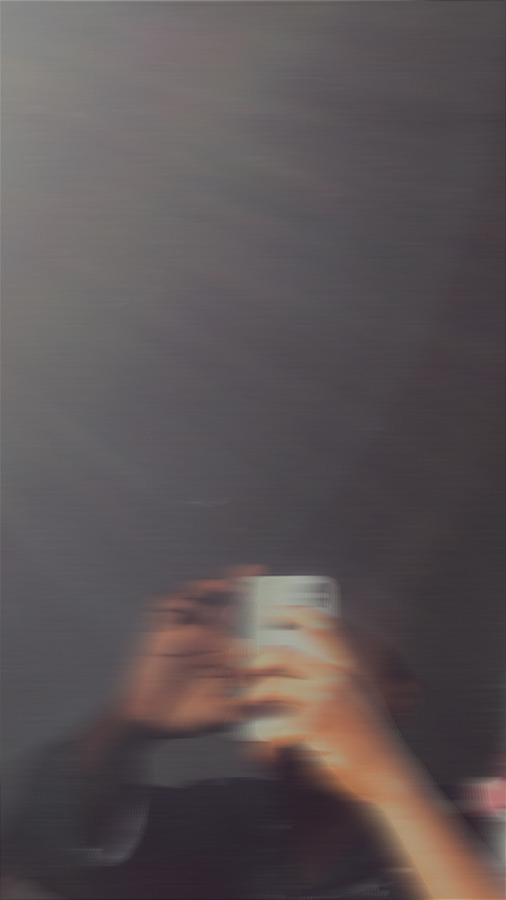

Detorlar Mubarak
Frontend Developer
With my expertise in Frontend, I can help you to create a fully responsive website that truly represents your brand and engages your audience using HTML, CSS, JavaScript.
Hire MeWith my expertise in Frontend, I can help you to create a fully responsive website that truly represents your brand and engages your audience using HTML, CSS, JavaScript.
Hire Me